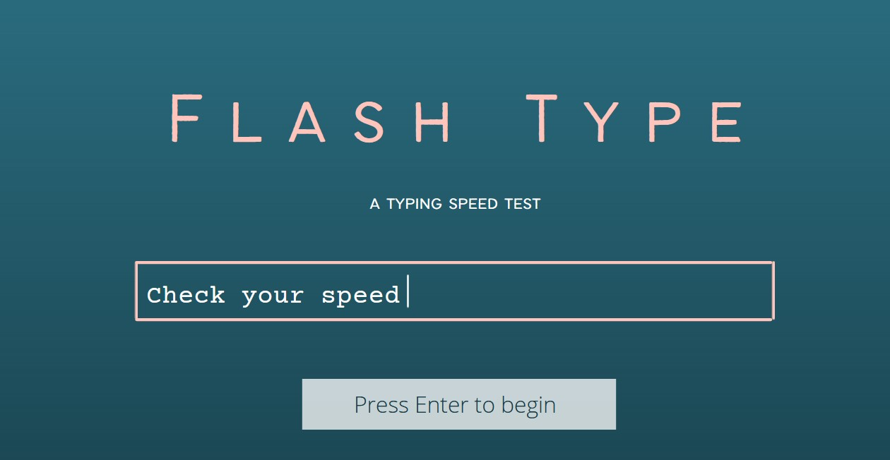

Hello! This is the main landing page for Flash Type. Our team, Kit Kat Juice, aims to create a Python program that functions as a typing speed test (with a GUI), which will test how fast the user can type a random paragraph (created through a program like generate_text and displayed one line at a time) based on characters/words per minute. At the start of each “round” of the typing test will have a mini-section that allows the user to choose the next text they will be tested on. At the end of the round, should the user choose to end it, error frequency analysis and the typing speed computations will be displayed (this will be made possible with the `time` module).
